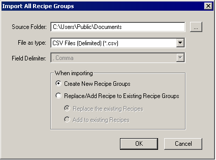
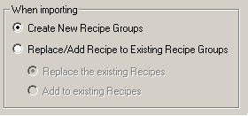
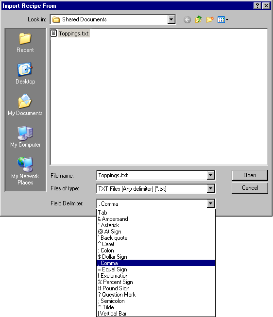
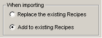

|
|
|
|
|
|
|
|
The following sections describe how to:
Right-click the Recipes node and select Import All Recipe Groups.
In the Import All Recipe Groups dialog box, specify the source folder and file type.

When importing, you can import recipes in one of four different file types:
CSV File (Comma delimited) (*.csv)
Unicode Common Recipe CSV Files (*.csv)
TXT File (Any delimiter) (*.txt)
Binary File (*.rcp)
In the When importing area. Select whether you want to create new recipe groups or replace/add to the existing recipe groups.

Create New Recipe Groups: This selection creates new recipe groups of the imported recipes.
Replace/Add to Existing Recipe Groups: This selection enables the following radio buttons.
Replace the existing Recipes: This option overwrites any recipe groups that use the same name as any recipe groups that are being imported for the target.
Add to existing Recipes: Instead of overwriting, this option appends the imported recipe groups to the list of existing recipe groups. To distinguish the imported recipes from the existing recipes, the Editor adds a digit to the imported recipe names. For example, if the recipe Sauce already exists, the imported recipe will be Sauce1.

The Replace/Add to Existing Recipe Groups is unavailable when importing SoMachine Recipe Files (*.export).
Click OK.
Right-click either the Recipes node or the Recipe Group node and select Import Recipe Group.
In the Import Recipe From dialog box, specify the folder, file name, and file type that you want to import.

When importing, you can import recipes in one of four different file types:
CSV File (Comma delimited) (*.csv)
Unicode Common Recipe CSV Files (*.csv)
TXT File (Any delimiter) (*.txt)
Binary File (*.rcp)
If you selected Import Recipe Group from the recipe group node's right-click menu, the dialog box displays an importing options area. Select whether you want to replace the recipes or add to the existing recipes in the selected recipe group.

Replace the existing Recipes: If importing CSV or TXT files, this selection replaces the current recipe and ingredient data with the new data. If importing RCP files, only the current recipe data is replaced with the new recipe data.
Add to existing Recipes: This selection appends the new recipe data to the recipe group. Ingredient data is not changed.

The Replace/Add to Existing Recipe Groups is unavailable when importing SoMachine Recipe Files (*.export).
Click Open.
The Editor validates that the CSV, TXT, RCP, or .EXPORT file being imported is a valid recipe group file. On validation, the Editor replaces an existing recipe group or appends recipes in an existing recipe group.